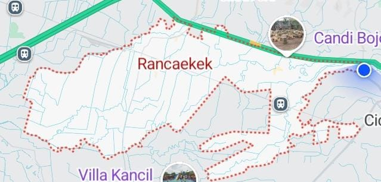

Sejarah Asal-Usul Kecamatan Rancaekek Kabupaten Bandung: Dari Wilayah Pertanian hingga Kawasan Industri

Rancaekek merupakan salah satu kecamatan yang berada di bagian timur Kabupaten Bandung, Provinsi Jawa Barat. Wilayah ini dikenal sebagai kawasan yang memiliki aktivitas pertanian, permukiman, perdagangan, pendidikan, serta industri tekstil.
Bagi masyarakat yang tinggal di Bandung Timur, nama Rancaekek tentu sudah sangat akrab. Namun, tidak semua orang mengetahui bagaimana perkembangan wilayah ini, bagaimana kedudukannya dalam administrasi Kabupaten Bandung, dan apa saja perubahan yang terjadi hingga menjadi kawasan yang dikenal seperti sekarang.
Melalui artikel ini, kita akan mengenal lebih jauh sejarah Kecamatan Rancaekek berdasarkan informasi dari pemerintah kecamatan, Badan Pusat Statistik (BPS), serta dokumen peraturan daerah yang dapat ditelusuri secara resmi.
1. Mengenal Letak dan Kedudukan Kecamatan Rancaekek
Kecamatan Rancaekek merupakan bagian dari Kabupaten Bandung, Jawa Barat. Letaknya berada di wilayah timur Kabupaten Bandung dan memiliki posisi strategis karena berada pada jalur penghubung Bandung dengan sejumlah wilayah lain di Jawa Barat.
Berdasarkan keterangan pada situs resmi Kecamatan Rancaekek, wilayah ini berada tidak jauh dari akses Tol Cileunyi dan berbatasan dengan kawasan Jatinangor di Kabupaten Sumedang.
Rancaekek juga dilintasi jalur transportasi yang menghubungkan Bandung dengan Garut, Tasikmalaya, Pangandaran, dan sejumlah wilayah lainnya.
Posisi geografis tersebut menjadi salah satu faktor penting yang mendukung perkembangan Rancaekek sebagai kawasan permukiman, perdagangan, pendidikan, dan industri.
2. Asal-Usul Nama Rancaekek, Apa Artinya?
Salah satu pertanyaan menarik tentang daerah ini adalah asal-usul nama Rancaekek. Nama sebuah wilayah sering kali berkaitan dengan kondisi alam, sejarah permukiman, bahasa daerah, atau peristiwa yang pernah terjadi di masa lampau.
Namun, sampai penelusuran sumber resmi untuk artikel ini dilakukan, belum ditemukan keterangan tertulis dari pemerintah kecamatan atau dokumen sejarah yang secara meyakinkan menjelaskan asal-usul kata Rancaekek.
Oleh karena itu, belum tepat jika satu arti atau cerita tertentu dinyatakan sebagai asal-usul nama Rancaekek tanpa dukungan sumber sejarah yang dapat diperiksa.
Untuk mendapatkan penjelasan yang lebih lengkap, penelitian dapat dilanjutkan melalui arsip pemerintahan lama, dokumen desa, cerita para sesepuh, serta catatan sejarah masyarakat setempat.
3. Perkembangan Rancaekek dari Wilayah Pertanian
Salah satu karakter wilayah Rancaekek yang disebutkan dalam profil resmi kecamatan adalah sektor pertanian, terutama tanaman pangan seperti padi.
Keberadaan lahan persawahan menjadi bagian penting dari kehidupan masyarakat di wilayah ini. Aktivitas pertanian tidak hanya berkaitan dengan produksi pangan, tetapi juga membentuk kehidupan sosial dan ekonomi masyarakat perdesaan.
Seiring berkembangnya wilayah Bandung Timur, aktivitas pembangunan, pertumbuhan permukiman, serta kegiatan industri turut mengubah sebagian wajah kawasan Rancaekek.
Situs resmi Kecamatan Rancaekek juga mencatat bahwa sebagian kawasan persawahan semakin terdesak oleh pembangunan.
Perubahan tersebut menunjukkan adanya perkembangan fungsi wilayah dari kawasan yang memiliki karakter pertanian menuju kawasan dengan aktivitas ekonomi yang semakin beragam.
4. Perkembangan Industri dan Perekonomian Rancaekek
Salah satu perubahan besar yang mudah dikenali di Rancaekek adalah berkembangnya kegiatan industri, terutama industri tekstil.
Pabrik-pabrik dan kegiatan usaha di sepanjang Jalan Raya Rancaekek menjadi bagian dari perkembangan ekonomi kawasan Bandung Timur.
Kehadiran industri turut mendorong tumbuhnya berbagai aktivitas ekonomi pendukung, seperti perdagangan, rumah makan, tempat tinggal pekerja, jasa transportasi, dan usaha masyarakat.
Perkembangan tersebut membuat Rancaekek tidak hanya dikenal sebagai wilayah pertanian, tetapi juga sebagai salah satu kawasan kegiatan industri di Kabupaten Bandung.
Meski demikian, sektor pertanian tetap menjadi bagian dari karakter wilayah yang perlu diperhatikan dalam pembangunan ke depan.
5. Perkembangan Transportasi dan Stasiun Rancaekek
Transportasi juga mempunyai peranan penting dalam perkembangan Rancaekek. Wilayah ini memiliki Stasiun Rancaekek yang menjadi salah satu fasilitas transportasi kereta api di kawasan Bandung Timur.
Keberadaan stasiun membantu menghubungkan masyarakat dengan kawasan Bandung dan wilayah lain melalui jaringan perkeretaapian.
Selain kereta api, jalur jalan raya juga menjadi bagian penting dari aktivitas masyarakat dan kegiatan ekonomi. Akses menuju Cileunyi, Cicalengka, Jatinangor, dan kawasan lainnya menjadikan Rancaekek sebagai salah satu wilayah yang cukup strategis.
Perkembangan transportasi tersebut mendukung mobilitas penduduk, kegiatan pendidikan, perdagangan, serta distribusi barang.
6. Pembentukan Kelurahan Rancaekek Kencana Tahun 2012
Salah satu catatan sejarah administratif Rancaekek yang memiliki dokumen hukum resmi adalah pembentukan Kelurahan Rancaekek Kencana.
Pemerintah Kabupaten Bandung menerbitkan Peraturan Daerah Kabupaten Bandung Nomor 19 Tahun 2012 tentang Pembentukan Kelurahan Rancaekek Kencana Kecamatan Rancaekek Kabupaten Bandung.
Peraturan daerah tersebut ditetapkan dan mulai berlaku pada tanggal 7 Mei 2012.
Berdasarkan abstrak peraturan yang tercatat dalam basis data peraturan Badan Pemeriksa Keuangan, pembentukan kelurahan ini berkaitan dengan penataan wilayah, peningkatan efektivitas penyelenggaraan pemerintahan, pembangunan, pelayanan masyarakat, serta aspirasi masyarakat Desa Rancaekek Wetan dan Desa Bojongloa.
Peristiwa tersebut merupakan salah satu perkembangan penting dalam sejarah administrasi wilayah Rancaekek.
7. Desa dan Kelurahan yang Ada di Kecamatan Rancaekek
Berdasarkan profil resmi Kecamatan Rancaekek, wilayah administrasi kecamatan ini terdiri atas 13 desa dan 1 kelurahan.
Berikut daftar wilayah desa dan kelurahan tersebut:
- Desa Bojongloa
- Desa Bojongsalam
- Desa Cangkuang
- Desa Haurpugur
- Desa Jelegong
- Desa Linggar
- Desa Nanjungmekar
- Desa Rancaekek Kulon
- Desa Rancaekek Wetan
- Desa Sangiang
- Desa Sukamanah
- Desa Sukamulya
- Desa Tegalsumedang
- Kelurahan Rancaekek Kencana
Keempat belas wilayah administrasi tersebut menjadi bagian dari pemerintahan Kecamatan Rancaekek yang melayani masyarakat di kawasan Bandung Timur.
8. Rancaekek pada Masa Sekarang
Saat ini, Rancaekek berkembang dengan berbagai kegiatan masyarakat. Kawasan pertanian, industri, permukiman, perdagangan, dan pendidikan hidup berdampingan dalam satu wilayah kecamatan.
Berdasarkan publikasi Kecamatan Rancaekek Dalam Angka 2026 yang diterbitkan BPS Kabupaten Bandung, kondisi wilayah dapat dilihat melalui data geografi, pemerintahan, kependudukan, sosial, pertanian, transportasi, komunikasi, hingga perdagangan.
Publikasi tersebut menjadi salah satu sumber penting untuk memahami perubahan dan kondisi Rancaekek dari sisi statistik pemerintahan.
Perkembangan Rancaekek juga memperlihatkan bagaimana sebuah wilayah mengalami perubahan mengikuti kebutuhan masyarakat, pertumbuhan penduduk, pembangunan infrastruktur, serta kegiatan ekonomi.
9. Mengapa Sejarah Lokal Rancaekek Penting untuk Diketahui?
Sejarah sebuah kecamatan bukan hanya mengenai tanggal pembentukan pemerintahan. Sejarah juga berkaitan dengan perjalanan masyarakat, perubahan lingkungan, perkembangan ekonomi, serta identitas daerah.
Dengan memahami perjalanan Rancaekek, masyarakat dapat lebih mengenal wilayah tempat tinggalnya dan memahami perubahan yang terjadi dari generasi ke generasi.
Penelusuran sejarah lokal juga penting untuk menjaga cerita masyarakat, nama-nama tempat, peninggalan sejarah, dan berbagai dokumen lama agar tidak hilang seiring perkembangan zaman.
Kesimpulan
Kecamatan Rancaekek merupakan salah satu wilayah penting di bagian timur Kabupaten Bandung yang mengalami perkembangan dari kawasan dengan karakter pertanian menjadi wilayah dengan aktivitas industri, perdagangan, pendidikan, dan permukiman.
Salah satu catatan administratif yang dapat dibuktikan melalui dokumen resmi adalah pembentukan Kelurahan Rancaekek Kencana melalui Perda Kabupaten Bandung Nomor 19 Tahun 2012.
Sementara itu, asal-usul nama Rancaekek dan tahun pasti berdirinya kecamatan masih memerlukan penelusuran arsip serta sumber sejarah lokal yang lebih mendalam.
Semoga tulisan ini dapat menambah pengetahuan masyarakat mengenai sejarah dan perkembangan Kecamatan Rancaekek, Kabupaten Bandung.
Sumber dan Referensi Sejarah
Artikel ini disusun dengan merujuk pada informasi dan dokumen resmi berikut:
-
Pemerintah Kecamatan Rancaekek.
Profil dan Sejarah Kecamatan Rancaekek.
Baca sumber resmi Kecamatan Rancaekek -
Badan Pusat Statistik Kabupaten Bandung.
Kecamatan Rancaekek Dalam Angka 2026, diterbitkan 28 September 2026.
Baca publikasi BPS 2026 -
Pemerintah Kabupaten Bandung.
Peraturan Daerah Kabupaten Bandung Nomor 19 Tahun 2012 tentang Pembentukan Kelurahan Rancaekek Kencana Kecamatan Rancaekek Kabupaten Bandung.
Baca dokumen peraturan di database BPK -
Pemerintah Kecamatan Rancaekek.
Informasi letak geografis dan wilayah administrasi.
Baca informasi geografis Kecamatan Rancaekek
Catatan editorial: Artikel ini merupakan rangkuman informasi dari sumber pemerintahan dan publikasi statistik. Penjelasan mengenai asal-usul nama dan tahun pendirian kecamatan tidak dinyatakan sebagai fakta karena belum ditemukan bukti dokumenter yang memastikannya.
Tanggal akses dan penyusunan: 6 November 2026.